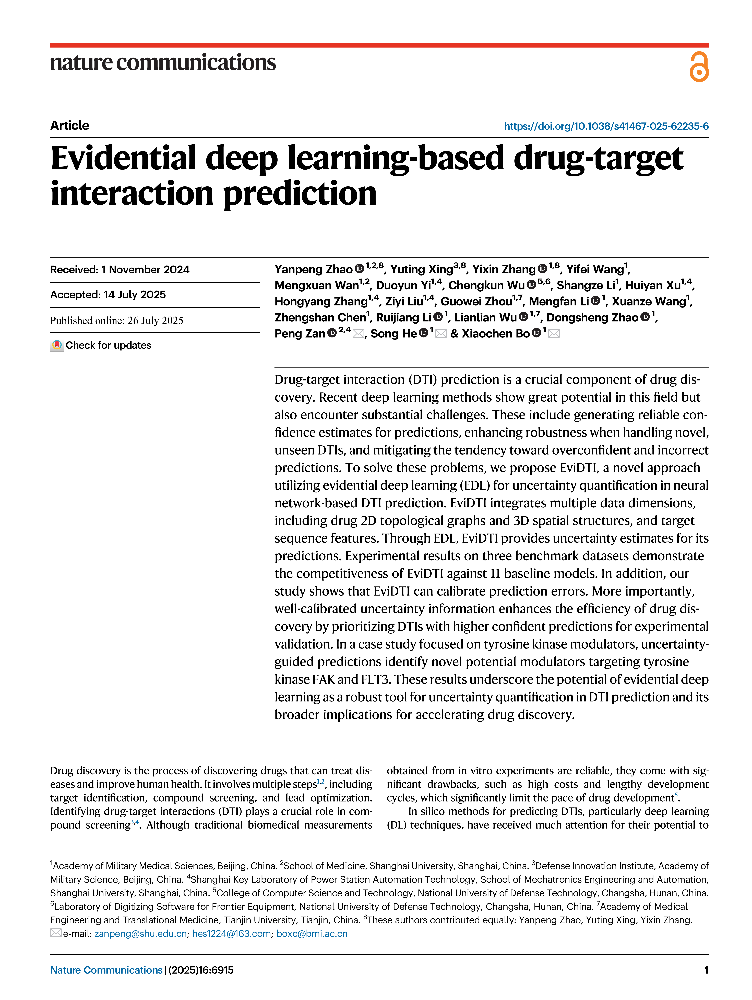

以下内容由脚本自动生成，供 DeepSeek 阅读。
Article https://doi.org/10.1038/s41467-025-62235-6
Evidential deep learning-based drug-target
interaction prediction
Yanpeng Zhao 1,2,8, Yuting Xing3,8, Yixin Zhang 1,8, Yifei Wang1
,
Mengxuan Wan1,2, Duoyun Yi1,4, Chengkun Wu 5,6, Shangze Li1
, Huiyan Xu1,4,
Hongyang Zhang1,4, Ziyi Liu1,4, Guowei Zhou1,7, Mengfan Li 1
, Xuanze Wang1
,
Zhengshan Chen1
, Ruijiang Li 1
, Lianlian Wu 1,7, Dongsheng Zhao 1
,
Peng Zan 2,4 , Song He 1 & Xiaochen Bo 1
Drug-target interaction (DTI) prediction is a crucial component of drug discovery. Recent deep learning methods show great potential in this field but
also encounter substantial challenges. These include generating reliable con-
fidence estimates for predictions, enhancing robustness when handling novel,
unseen DTIs, and mitigating the tendency toward overconfident and incorrect
predictions. To solve these problems, we propose EviDTI, a novel approach
utilizing evidential deep learning (EDL) for uncertainty quantification in neural
network-based DTI prediction. EviDTI integrates multiple data dimensions,
including drug 2D topological graphs and 3D spatial structures, and target
sequence features. Through EDL, EviDTI provides uncertainty estimates for its
predictions. Experimental results on three benchmark datasets demonstrate
the competitiveness of EviDTI against 11 baseline models. In addition, our
study shows that EviDTI can calibrate prediction errors. More importantly,
well-calibrated uncertainty information enhances the efficiency of drug discovery by prioritizing DTIs with higher confident predictions for experimental
validation. In a case study focused on tyrosine kinase modulators, uncertaintyguided predictions identify novel potential modulators targeting tyrosine
kinase FAK and FLT3. These results underscore the potential of evidential deep
learning as a robust tool for uncertainty quantification in DTI prediction and its
broader implications for accelerating drug discovery.
Drug discovery is the process of discovering drugs that can treat diseases and improve human health. It involves multiple steps1,2
, including
target identification, compound screening, and lead optimization.
Identifying drug-target interactions (DTI) plays a crucial role in compound screening3,4
. Although traditional biomedical measurements
obtained from in vitro experiments are reliable, they come with significant drawbacks, such as high costs and lengthy development
cycles, which significantly limit the pace of drug development5
.
In silico methods for predicting DTIs, particularly deep learning
(DL) techniques, have received much attention for their potential to
Received: 1 November 2024
Accepted: 14 July 2025
Check for updates
1
Academy of Military Medical Sciences, Beijing, China. 2
School of Medicine, Shanghai University, Shanghai, China. 3
Defense Innovation Institute, Academy of
Military Science, Beijing, China. 4
Shanghai Key Laboratory of Power Station Automation Technology, School of Mechatronics Engineering and Automation,
Shanghai University, Shanghai, China. 5
College of Computer Science and Technology, National University of Defense Technology, Changsha, Hunan, China. 6
Laboratory of Digitizing Software for Frontier Equipment, National University of Defense Technology, Changsha, Hunan, China. 7
Academy of Medical
Engineering and Translational Medicine, Tianjin University, Tianjin, China. 8
These authors contributed equally: Yanpeng Zhao, Yuting Xing, Yixin Zhang.
e-mail: zanpeng@shu.edu.cn; hes1224@163.com; boxc@bmi.ac.cn
Nature Communications | (2025) 16:6915 1
1234567890():,;
1234567890():,;
reduce drug development costs, shorten time and increase the success
rate of new drugs6–9
. These methods can be broadly classified into
network-based methods and proteochemometrics (PCM)10. Networkbased methods integrate drug-target, drug-drug, and protein-protein
interactions, etc. multiple networks into a unified network10–12.
Recently, PCM methods have received increasing attention. PCM
employs representations of drug and protein information to improve
the accuracy of DTI predictions, and its performance largely dependent on the effectiveness of molecular and protein representations13,14.
Typically, amino acid sequences of protein are typically used as input
for proteins, while molecular graph and SMILES strings are commonly
used as input for drugs. To obtain representation of proteins and
drugs, convolutional neural networks (CNNs)15, recurrent neural networks (RNNs), graph neural networks (GNNs)16–18 and transformer
models19,20 are typically applied. A great deal of innovative work has
been undertaken to predict interactions more effectively14.To improve
model interpretability and capture local interactions of drug-target,
the gated cross-attention mechanisms have received more
attention21–24. To address the problem of small dataset sizes and
incomplete representations in DTI prediction, pre-training models are
emerging as a promising solution25–27. These models demonstrate
excellent scalability and generalization capabilities across a wide range
of prediction tasks28–32. To achieve more comprehensive and nuanced
representations, many methods integrate multimodal techniques that
combine different types of data33,34.
Despite the significant advances achieved by DL in DTI prediction, its
practical application still faces a major challenge: high probability predictions do not necessarily correspond to high confidence35,36. The root
of this problem lies in the fundamental difference between DL models
and human cognitive models37. Humans are able to dynamically adjust
the confidence level according to the knowledge boundary, giving certain answers to familiar questions and explicitly expressing “uncertainty”
about unknown domains. In contrast, traditional DL models generate
predictions for all inputs, including out-of-distribution and noisy samples. More critically, traditional DL models lack probability calibration
ability and may produce high prediction probabilities even in low con-
fidence situations. This phenomenon of “overconfidence” has the tendency to introduce unreliable predictions into downstream processes,
including the pushing of false positives into experimental validation, the
omission of potentially active compounds in virtual screening, and even
the designing of clinical trial protocols based on false predictions. These
situations not only lead to inefficient use of resources, but also have the
potential to delay the drug discovery process.
Uncertainty quantification (UQ) methods can address above
challenge and thus improve the robustness of neural models in scientific applications38–44, especially in the field of drug discovery. The
core value of UQ is to provide a reliable basis for decision-making by
distinguishing between plausible predictions and high-risk predictions. Typically UQ45,46 methods include Bayesian neural networks47
and sampling-based48,49 methods. However, these methods typically
rely on multiple random sampling to approximate the underlying
uncertainty function50–52, resulting in high computational costs and
extended runtimes. This poses a significant limitation for large-scale
DTI prediction. Evidential deep learning (EDL) offers a promising
alternative that provides a direct way to learn about uncertainty
without relying on random sampling53,54. Furthermore, EDL can be
integrated into existing network structures without major architectural modifications. Several approaches have demonstrated the
potential of EDL in the field of drug discovery and development43,55–57.
In this work, we propose an EDL-based DTI prediction framework
(EviDTI). The framework utilizes pre-trained knowledge as well as
multi-dimensional representations to enhance the model performance. More importantly, EviDTI provides prediction confidence
estimation by introducing EDL to help identify drug candidates that
are most likely to be successful, thus reducing the risk and cost
associated with false positives. The framework comprises three main
components: a protein feature encoder, a drug feature encoder, and an
evidence layer. In protein feature encoder, the protein language pretrained model ProtTrans30 is employed to extract protein sequence
features. The light attention mechanism is then employed to provide
insights into local interactions at the residue level. For drug features,
2D graph representations are obtained using our previously proposed
pre-trained model, MG-BERT58. Additionally, 3D features of drugs are
encoded via geometric deep learning. The learned protein and drug
representations are concatenated and fed into the evidential layer to
obtain DTI probabilities and uncertainties. In a comprehensive evaluation across 11 DTI prediction models, EviDTI demonstrates competitive performance. Moreover, we demonstrate that evidentialbased uncertainty can effectively calibrate prediction errors. This
uncertainty information can accelerate drug discovery and repositioning by prioritizing DTIs with more confident predictions for
experimental validation. By applying uncertainty-guided prediction in
the discovery of potential tyrosine kinase modulators, EviDTI identifies
potential new modulators targeting tyrosine kinase FAK and FLT3,
highlighting the utility of EviDTI in drug discovery. By bridging the gap
between prediction and reliability, EviDTI offers a trustworthy solution
for DTI prediction. The source code is available at https://github.com/
zhaoyanpeng208/EviDTI.
Results
Overview
We developed an EDL-based DTI prediction model, EviDTI. As shown in
Fig. 1, the EviDTI framework consists of three main components: protein
feature encoder, drug feature encoder, and evidential layer. Given a drugtarget pair as input, the protein feature encoder utilizes the protein
sequence pre-training model ProtTrans as the initial encoder to generate
an initial target representation. This representation undergoes further
feature extraction through the light attention (LA) module. In the drug
feature encoder, both 2D topological information and 3D structural
information of the drug are encoded. For the drug 2D topological graph,
an initial representation is derived using our previously proposed molecule pre-training model MG-BERT36, which is subsequently processed by
a 1DCNN. The 3D spatial structure of the drug is converted into an atombond graph and a bond-angle graph, with the representation obtained
through the GeoGNN module. The target and drug representation are
then concatenated and fed into the evidential layer. The output of the
evidential layer is the parameter α, which is used to calculate the prediction probability and the corresponding uncertainty value.
Performance comparison
To evaluate the effectiveness of the EviDTI framework, we validated it
on three different experimental datasets: DrugBank, Davis59, and
KIBA60. These datasets were randomly divided into training, validation
and test sets in a ratio of 8:1:1. We used seven evaluation metrics:
accuracy (ACC), recall, precision, Matthews correlation coefficient
(MCC), F1 score, area under the ROC curve (AUC), and area under the
precision-recall curve (AUPR) to assess model performance. EviDTI is
compared with three traditional machine learning methods, including
Random Forests (RFs)61, Support Vector Machines (SVMs)62 and Naive
Bayesian (NB)63. These methods have been widely used in DTI prediction and are important benchmarks for evaluating the performance
of our proposed method. In addition, EviDTI is compared with eight
state-of-the-art models in the field, including DeepConv-DTI19,
GraphDTA64, MolTrans20, HyperAttention17, TransformerCPI65,
GraphormerDTI24, AIGO-DTI66, and DLM-DTI27.
The performance results on the DrugBank dataset are shown in
Table 1. EviDTI shows robust overall performance on all metrics,
especially in terms of precision (81.90%), and competitive values for
Accuracy (82.02%), MCC (64.29%) and F1 score (82.09%). Besides, we
evaluated EviDTI on the Davis and KIBA datasets, which are particularly
Article https://doi.org/10.1038/s41467-025-62235-6
Nature Communications | (2025) 16:6915 2
challenging due to class imbalance. The performance results on the
Davis and KIBA datasets are presented in Tables 2 and 3, respectively.
Specifically, on the KIBA dataset, EviDTI outperformed the best baseline model by 0.6% in accuracy, 0.4% in precision, 0.3% in MCC, 0.4% in
F1 score, and 0.1% in AUC. On the Davis dataset, EviDTI exceeds 0.8% in
accuracy, 0.6% in precision, 0.9% in MCC, 2% in F1 score, 0.1% in AUC,
and 0.3% in AUPR. These results demonstrate the robustness and
superior performance of EviDTI when dealing with complex and
unbalanced datasets. Overall, EviDTI achieved robust and superior
performance on three benchmark datasets, which further validates the
effectiveness and competitiveness of EviDTI.
In order to evaluate the effectiveness of the EviDTI in predicting
novel DTIs, we introduced a cold-start scenario following the practice
established by Wang et al12. Supplementary Table 2 demonstrates the
performance of EviDTI under the cold-start scenario. EviDTI outperforms other models in several evaluation metrics, especially in accuracy (79.96%), recall (81.20%), F1 score (79.61%) and MCC value
(59.97%). Its AUC value (86.69%) is slightly lower than TransformerCPI’s 86.93%. These results demonstrate that EviDTI is a competitive
model in cold start scenarios.
Multidimensional feature fusion and pre-trained models lead to
better prediction performance
Two ablation studies were conducted to explored the impact of different combinations of dimensional features and the use of pre-trained
model features on DTI prediction.
Firstly, we compare the performance of models using singledimensional features with models using a multidimensional feature
K
i 1 i
k pk
K
i 1 i
K u
Interaction prediction
Evidential uncertainty
Evidential layers
Fig. 1 | The flowchart of EviDTI. For a given drug-target pair, the protein feature
encoder employs the pre-trained ProtTrans for initial target representation, further
refined by a light attention (LA) module. The drug feature encoder processes the 2D
topology and 3D structure representations. The 2D representation is derived from
the pre-trained MG-BERT model and processed by 1D CNN. The 3D structure
representation is obtained via the GeoGNN. These representations are concatenated and fed into the evidence layer, which outputs parameter α for prediction probability and uncertainty.
Article https://doi.org/10.1038/s41467-025-62235-6
Nature Communications | (2025) 16:6915 3
fusion strategy. Supplementary Figs. 1 and 2 illustrate the various
feature combination architectures used. Specifically, three multidimensional feature combinations were evaluated on three datasets:
EviDTI: combines the 2D topological representation and the 3D
structural representation of small molecules of small molecules, and
protein sequence representation.
EviDTI w/o drug 3D: utilizes 2D topological representation of
small molecules and the protein sequence representation.
EviDTI w/o drug 2D: utilizes 3D structural representation of small
molecules and the protein sequence representation.
As shown in Fig. 2a and Supplementary Table 3, the EviDTI model
consistently outperformed the other two models across all three
Table 1 | Comparison results of EviDTI and baselines on the DrugBank dataset
DrugBank Accuracy (std) Recall (std) Precision (std) MCC (std) F1 score (std) AUC (std) AUPR (std)
RF 71.07 (1.34) 73.08 (0.95) 76.92 (1.42) 51.23 (1.54) 74.94 (0.92) 83.03 (0.65) 84.78 (0.67)
NB 52.90 (1.13) 87.99 (1.77) 51.71 (1.01) 42.34 (3.24) 65.13 (0.89) 60.76 (1.24) 59.37 (1.77)
SVM 78.02 (1.92) 75.04 (2.93) 73.86 (2.14) 53.87 (1.29) 74.39 (1.40) 82.02 (1.62) 82.85 (1.49)
DeepConv-DTI 79.50 (0.22) 80.45 (0.21) 79.30 (0.64) 57.91 (0.61) 79.87 (0.62) 86.69 (0.22) 86.28 (0.13)
GraphDTA 77.69 (0.11) 78.77 (1.13) 76.92 (1.05) 55.41 (0.63) 77.83 (1.18) 83.62 (0.25) 83.26 (0.18)
MolTrans 78.48 (0.17) 81.97 (0.23) 77.01 (0.35) 55.65 (0.62) 79.41 (0.73) 85.98 (0.64) 86.67 (0.12)
HyperAttention 80.85 (0.23) 88.16 (0.15) 77.09 (0.17) 62.32 (0.42) 82.26 (0.33) 89.94 (0.14) 88.95 (0.15)
TransformerCPI 79.01 (0.24) 76.26 (0.36) 80.47 (0.34) 58.09 (0.22) 78.31 (0.38) 84.62 (0.33) 84.23 (0.28)
GraphormerDTI 80.22 (1.07) 82.05 (1.23) 79.11 (0.91) 60.48 (2.16) 80.55 (1.02) 88.63 (1.02) 88.36 (0.99)
AIGO-DTI 81.88 (1.37) 82.28 (2.69) 81.26 (0.36) 63.80 (2.78) 81.74 (1.40) 88.62 (1.02) 88.44 (1.65)
DLM-DTI 82.13 (0.27) 82.54 (1.91) 81.68 (1.56) 66.32 (0.55) 81.08 (0.56) 90.48 (0.48) 90.20 (0.60)
EviDTI 82.02 (0.43) 82.28 (1.03) 81.90 (0.58) 64.29 (1.05) 82.09 (0.74) 88.87 (0.73) 88.45 (1.51)
The best results are highlighted in bold, while the second-best results are underlined. Five independent replications of each method were performed (n = 5). Data are expressed as means (std).
Table 2 | Comparison results of EviDTI and baselines on the KIBA dataset
KIBA Accuracy (std) Recall (std) Precision (std) MCC (std) F1 score (std) AUC (std) AUPR (std)
RF 88.41 (0.34) 64.84 (2.48) 70.57 (2.30) 63.21 (1.67) 67.59 (1.37) 91.05 (0.38) 76.05 (1.04)
NB 52.92 (0.83) 71.72 (1.77) 24.22 (1.40) 24.56 (3.24) 36.21 (1.47) 65.92 (0.78) 35.51 (0.94)
SVM 81.72 (0.46) 3.87 (0.76) 66.40 (2.91) 5.24 (1.34) 7.32 (0.92) 73.27(0.56) 43.38 (1.60)
DeepConv-DTI 89.05 (0.32) 68.87 (0.43) 80.52 (0.34) 70.21 (0.28) 74.24 (0.63) 90.67 (0.17) 80.42 (0.62)
GraphDTA 88.92 (0.11) 59.42 (3.23) 77.53 (2.03) 67.51 (0.52) 71.24 (0.81) 91.41 (0.12) 77.61 (0.74)
MolTrans 88.91 (0.16) 73.53 (0.23) 70.42 (0.34) 67.62 (0.22) 71.94 (0.16) 92.32 (0.33) 79.49 (0.64)
HyperAttention 89.33 (0.12) 79.63 (0.24) 68.93 (0.18) 70.12 (0.22) 74.21 (0.35) 93.51 (0.17) 81.41 (0.23)
TransformerCPI 87.01 (0.18) 63.12 (0.32) 66.93 (0.34) 66.2 (0.26) 69.12 (0.23) 88.81 (0.18) 70.81 (0.16)
GraphormerDTI 86.54 (0.85) 85.40 (1.68) 60.63 (1.84) 64.03 (1.10) 70.87 (0.89) 92.58 (0.25) 81.95 (0.91)
AIGO-DTI 90.68 (0.32) 73.65 (0.77) 76.77 (1.12) 69.46 (0.97) 75.17 (0.77) 93.06 (0.26) 83.91 (0.77)
DLM-DTI 88.25 (0.25) 68.10 (2.15) 69.86 (0.90) 61.72 (0.78) 68.94 (0.87) 91.14 (0.39) 75.63 (0.41)
EviDTI 91.27 (0.07) 70.77 (1.69) 80.90 (1.32) 70.44 (0.78) 75.48 (0.83) 93.57 (0.35) 83.03 (0.98)
The best results are highlighted in bold, while the second-best results are underlined. Five independent replications of each method were performed (n = 5). Data are expressed as means (std).
Table 3 | Comparison results of the EviDTI and baselines on the Davis dataset
Davis Accuracy (std) Recall (std) Precision (std) MCC (std) F1 score (std) AUC (std) AUPR (std)
RF 84.48 (0.60) 65.01 (1.47) 80.70 (1.87) 64.12 (2.11) 72.01 (1.49) 89.64 (0.68) 83.04 (1.68)
NB 67.53 (0.92) 61.70 (1.82) 47.78 (1.95) 45.21 (1.68) 53.85 (1.72) 70.11 (1.39) 58.43 (2.09)
SVM 82.13 (0.59) 59.70 (1.57) 76.96 (2.19) 60.23 (1.45) 67.24 (1.61) 87.85 (0.78) 80.16 (1.65)
DeepConv-DTI 86.41 (0.27) 72.14 (0.33) 77.85 (0.44) 64.53 (0.35) 74.89 (0.64) 91.83 (0.20) 83.87 (0.62)
GraphDTA 81.72 (0.19) 53.01 (1.76) 74.33 (1.45) 62.42 (0.67) 71.83 (0.82) 85.92 (0.43) 74.31 (0.74)
MolTrans 83.61 (0.18) 76.31 (0.34) 68.87 (0.24) 62.91 (0.13) 72.40 (0.17) 89.84 (0.22) 80.26 (0.66)
HyperAttention 86.61 (0.14) 78.01 (0.23) 75.41 (0.16) 67.54 (0.28) 74.21 (0.22) 92.01 (0.14) 83.92 (0.13)
TransformerCPI 82.22 (0.16) 68.82 (0.38) 68.81 (0.37) 64.21 (0.24) 72.41 (0.25) 87.72 (0.16) 76.71 (0.18)
GraphormerDTI 84.81 (0.84) 83.78 (2.52) 68.43 (2.18) 65.22 (1.84) 75.28 (1.43) 91.24 (0.74) 84.31 (1.48)
AIGO-DTI 86.19 (0.79) 72.55 (2.94) 78.01 (2.11) 65.72 (1.96) 75.12 (1.52) 92.01 (0.97) 84.81 (1.10)
DLM-DTI 85.66 (0.47) 74.08 (2.50) 75.26 (1.92) 64.68 (1.27) 74.62 (1.03) 91.30 (0.35) 82.48 (0.86)
EviDTI 87.40 (1.08) 72.93 (1.93) 81.17 (2.94) 68.40 (2.78) 76.81 (2.03) 92.10 (0.78) 85.07 (2.12)
The best results are highlighted in bold, while the second-best results are underlined. Five independent replications of each method were performed (n = 5). Data are expressed as means (std).
Article https://doi.org/10.1038/s41467-025-62235-6
Nature Communications | (2025) 16:6915 4
datasets in most evaluation metrics. This result indicates that multidimensional feature fusion significantly enhances DTI prediction
performance.
To explore the benefits of using pre-trained models as initial
feature extractors, we compared the performance of architectures
with and without pre-trained models. Supplementary Figs. 3 and 4
depict the different ablation architectures examined:
EviDTI-Protein Integer: replaces the protein pre-training model
ProtTrans with integer coding and a CNN for feature extraction.
EviDTI-Drug 2D GCN: replaces the small molecule pre-training
model MG-BERT with a two-layer GCN.
Figure 2b and Supplementary Table 4 illustrate the performance
of these different model frameworks across the three datasets. It is
evident that the architectures utilizing pre-trained models for initial
feature extraction outperformed those that did not across all metrics.
This finding underscores the value of leveraging pre-trained models to
enhance DTI prediction performance.
Evidential deep learning provides a reliable measure of
uncertainty
Following the evaluation of EviDTI’s prediction performance on the
benchmark dataset, it becomes critical to ensure that the model can
provide reliable estimates of uncertainty in the DTI prediction task. To
assess whether the model can effectively assess prediction uncertainty, two hypotheses are proposed and tested:
1. Samples with correct predictions should have low uncertainty,
while samples with incorrect predictions should have high
uncertainty.
2. Samples with lower uncertainty should exhibit higher prediction
accuracy.
These assumptions are based on the EDL principle, which views
learning as a process of acquiring evidence. The more evidence
accumulated, the greater the confidence and the higher the probability
of prediction.
First, the correlation between uncertainty and prediction results
was assessed on the three benchmark datasets. Figure 3a illustrates
the relationship between the sample prediction results and the
uncertainty values. The horizontal axis divides the sample into true
positives (TP, true value 1, predicted value 1), false positives (FP, true
value 0, predicted value 1), false negatives (FN, true value 1, predicted
value 0) and true negatives (TN, true value 0, predicted value 0). The
vertical axis represents the distribution of uncertainty values for
each group.
Fig. 2 | The results of two ablation experiments. a Performance comparison on
the DrugBank, KIBA and Davis datasets using single-dimensional features and
multidimensional feature fusion strategies. Five independent replications of each
method were performed (n = 5). Data are expressed as means ± std. b Performance
comparison of feature extraction with and without pre-trained models on DrugBank, KIBA, and Davis datasets. Five independent replications of each method were
performed (n = 5). Data are expressed as means ± std. Source data are provided as a
Source Data file.
Article https://doi.org/10.1038/s41467-025-62235-6
Nature Communications | (2025) 16:6915 5
In all benchmark datasets, the incorrectly predicted samples (FP
and FN) typically exhibit higher uncertainty than the correctly predicted samples. However, there were performance differences
between the datasets. Fewer outliers were observed in the Davis and
KIBA datasets than in the DrugBank dataset, which may be due to the
fact that the DrugBank dataset contains a wider range of proteins and
small molecules with complex and diverse structures. In contrast, the
Davis and KIBA datasets contain a more limited diversity of proteins
and small molecules of kinases.
We further analyzed whether the model provides a reliable measure of uncertainty in the cold-start dataset. Supplementary Fig. 5
demonstrates the relationship between sample prediction results and
uncertainty values in the cold-start dataset. The incorrectly predicted
samples (FP and FN) in the cold-start dataset also typically exhibit
higher uncertainty than the correctly predicted samples.
Next, we examined the relationship between sample uncertainty
and prediction accuracy to validate the second hypothesis. Samples
were ranked according to their uncertainty values and divided into 20
confidence intervals, each containing 5% of the total samples. For
example, the first interval includes the top 5% of samples with the
lowest uncertainty, while the second interval comprises samples with
an uncertainty ranking of 6–10%. The accuracy within each interval was
then calculated separately, as shown in Fig. 3b.
Figure 3b shows that within the confidence interval with the
lowest uncertainty (top 5 per cent), i.e., the region with the highest
confidence in the model’s predictions, the accuracy exceeds 90 per
Fig. 3 | Evidential deep learning provides a favorable measure of uncertainty.
a A Mann–Whitney test was performed on the error distribution of uncertainty in
samples classified as TP, FP, FN, TN for three datasets: DrugBank (n = 3312 observations), KIBA (n = 11,639 observations), and Davis (n = 2,583 observations). The
central line indicates the median, the box bounds indicate the 25th and 75th percentiles, whiskers extend to the minimum and maximum values (within 1.5×
interquartile range), and outliers are shown as individual points. All tests were twosided, with no adjustments made for multiple comparisons. Asterisks indicate
statistically significant differences based on Mann–Whitney U test p-values:
****p ≤ 0.0001. Significance is indicated as follows: For DrugBank dataset, TP vs. FN
has a p-value of 1.055e-10, FP vs. TN has a p-value of 4.954e-74, TP vs. FP has a pvalue of 1.546e-51, FN vs. TN has a p-value of 1.895e-26. For KIBA dataset, TP vs. FN
has a p-value of 9.713e-30, FP vs. TN has a p-value of 4.954e-74, TP vs. FP has a pvalue of 1.546e-51, FN vs. TN has a p-value of 1.895e-26. For Davis dataset, TP vs. FN
has a p-value of 3.502e-09, FP vs. TN has a p-value of 5.662e-45, TP vs. FP has a pvalue of 6.667e-21, FN vs. TN has a p-value of 7.434e-40. b Test data sorted and
divided into 20 confidence intervals based on uncertainty. All tests were two-sided
with no adjustments made for multiple comparisons. The ACC was calculated for
samples within each confidence interval. Five independent replications (n = 5) were
performed in each data set. Data are presented as mean ± std. Source data for the
figure are shown in Supplementary Data. Source data are provided as a Source
Data file.
Article https://doi.org/10.1038/s41467-025-62235-6
Nature Communications | (2025) 16:6915 6
cent for all three benchmark datasets, and is close to 100 per cent for
the KIBA and Davis datasets. In contrast, within the confidence interval
with the highest uncertainty (96–100%), the accuracy ranged between
0.5 and 0.6. This suggests that the model effectively communicates
uncertainty and therefore these predictions should be treated with
caution. In conclusion, the predictive accuracy of the model decreases
progressively with increasing uncertainty.
These findings suggest that the uncertainty estimates generated
by EviDTI can be an important tool for calibrating predictions. It also
implies that EviDTI can help reduce the risks and costs associated with
incorrect DTI predictions, providing important support for the
decision-making process in drug discovery.
Uncertainty prediction accelerates drug discovery
After validating that EviDTI can effectively calibrate predictions, we
explored its application in real-world scenarios. In practical settings,
model performance in high-confidence intervals is particularly
important. Therefore, we aimed for the model to achieve good
uncertainty calibration in these intervals and to guide the identification of new DTIs.
First, we used the out-of-fold (OFR)45,67 to examine the predictive
performance of the model at high confidence intervals. By setting
thresholds ranging from 0.1 to 0.01, we compare the performance of
the models at different confidence levels. To elucidate the role of
evidential uncertainty, we compare two approaches: a probabilitybased approach that does not use uncertainty and an uncertaintybased approach that uses evidential uncertainty to obtain probabilities. Figure 4a–c shows the OFR (based on five random data splits)
for the different methods on each dataset.
According to Fig. 4a–c and Supplementary Table 5, the
probability-based approach achieves higher prediction performance
at lower thresholds. As the threshold increases, the OFR of both
approach decreases, with the uncertainty-based approach decreasing
more significantly. The uncertainty-based method has a lower OFR on
all three datasets when the threshold is below 0.02. This suggests that
the predictive performance of EviDTI in high confidence intervals is
higher than that of the method without EDL because it provides better
uncertainty calibration.
Next, we conducted several case studies to illustrate how uncertainty can improve prediction reliability. As shown in Fig. 4e, for some
DTIs, probability-based methods yield incorrect predictions with high
prediction probabilities that may mislead experimental validation. In
contrast, uncertainty-based methods identify these predictions as
unreliable by assigning a high uncertainty score. This ability to convey
prediction uncertainty is critical to avoid misguidance.
While our experiments were trained and validated on the same
datasets (with similar sample and feature distributions), real-world
challenges involve predicting unseen DTIs, where the distribution
differs from the training data. EDL’s ability to assess uncertainty in such
cases is essential for making informed decisions about prediction
reliability.
To conduct this study, we turned to external datasets to assess the
potential of evidence uncertainty in predicting unseen samples. We
constructed an independent test set of all new drugs and their targets
approved by the US Food and Drug Administration in 202268 to ensure
that these drugs did not appear in the training set, as detailed in
Methods. A total of 24 pairs of drug-target interactions and 24 pairs of
randomly generated negative interactions were collected for model
performance testing. These newly reported drugs typically have novel
backbones and targets that occupy different regions of chemical space.
We compared two ranking strategies for DTI identification: (1)
ranking based on predicted probabilities (probabilities-based ranking), and (2) ranking based on uncertainty scores (uncertainty-based
Fig. 4 | Evidential deep learning helps reduce the risk of false predictions in
decision-making. a Comparison of OFR between uncertainty-based and
probability-based frameworks on DrugBank dataset at different thresholds. Five
independent replications of each method were performed (n = 5). Data are
expressed as means ± std. b Comparison of OFR between uncertainty-based and
probability-based frameworks on the KIBA dataset at different thresholds. Five
independent replications of each method were performed (n = 5). Data are
expressed as means ± std. c Comparison of OFR between uncertainty-based and
probability-based frameworks on the Davis dataset at different thresholds. The line
represents the mean OFR, and the shaded area indicates the standard deviation.
Five independent replications of each method were performed (n = 5). Data are
expressed as means ± std. d Hit rates of the Top20 ranked predictions determined
by uncertainty ranking strategies and probability ranking strategies. Five independent replications of each method were performed (n = 5). Data are expressed as
means ± std. e Case study. Column interaction is the true label of the DTIs. Column
Uncertainty-based is the predicted probability based on the uncertainty method
and the predicted label, with the uncertainty given by the model in parentheses.
Column Probability-based is the predicted probability of the probability-based
method and the predicted labels. Source data are provided as a Source Data file.
Article https://doi.org/10.1038/s41467-025-62235-6
Nature Communications | (2025) 16:6915 7
ranking). Hit rates are used to evaluate these strategies, which reflect
the proportion of true DTIs correctly identified with minimal false
positives. We first select the top-ranked prediction and calculate the
hit rate under that ranking. Then, the ranking thresholds are gradually
increased and the hit rates of the two ranking strategies are computed
at each threshold. Figure 4d shows the hit rate curves determined by
these two ranking strategies. Uncertainty-based ranking achieves a
100% hit rate for Top3 predictions and a hit rate of over 80% for Top10
predictions. In contrast, the probability-based ranking achieves a 100%
hit rate only for the Top1 prediction and exhibits greater volatility for
the Top3 prediction, indicating a lack of robustness in its model predictions. The above results illustrate that uncertainty-based rankings
reduce false positives, suggesting that evidential uncertainty can
reduce false positives in top DTIs.
It is worth noting that the performance of EviDTI on external
datasets (based on standard assessment metrics) is not impressive. In
addition, the study investigates whether UQ enhances the overall
prediction performance in comparison to non-uncertainty-based
models. The performance of model with UQ integration and the
model without UQ integration was compared across three benchmark
datasets. The model without UQ integration has the same architecture
but does not use the evidential layer. As shown in Supplementary
Fig. 6, the model with UQ integration performs comparably to the
model without UQ integration respect to the standard evaluation
metrics. However, uncertainty information remains critical. The primary objective of DTI identification is to maximize the chances of
discovering a true DTI by prioritizing high-confidence predictions
rather than exhaustively testing all possibilities. Incorporating uncertainty into DTI screening can improve hit rates, reduce false positives,
and increase the efficiency of drug discovery by focusing experimental
validation on the most reliable predictions.
In summary, these findings demonstrate that EviDTI, by quantifying
uncertainty, offers a promising solution for improving the reliability of
predictions and the efficiency of screening in drug-target discovery.
Application in multi-target tyrosine kinase modulators research
Tyrosine kinases are a critical class of enzymes that regulate cell signaling and play a central role in cancer therapy by driving proliferation
and survival pathways69,70. Tyrosine kinase modulators have been
widely used to regulate these kinase by binding to their phosphorylation sites. However, the efficacy of single-target tyrosine kinase
modulators is frequently constrained due to the complexity. Additionally, single-target inhibitors frequently induce drug resistance,
diminishing their clinical utility71. Multi-target tyrosine kinase modulators offer a promising solution by regulating multiple cancerassociated kinases simultaneously, disrupting the tumor signaling
network and improving therapeutic efficacy.
We investigated the potential of EviDTI for the discovery of novel
multi-targeted tyrosine kinase regulators. Initially, the efficacy of
EviDTI in predicting interactions between tyrosine kinases and tyrosine kinase modulators was validated. Subsequently, EviDTI was
applied to screen for new multi-targeted regulators and evaluated
them by in vitro experiments.
Firstly, we validated the performance of EviDTI based on patent.
Specifically, the interaction data between two Lenvatinib analogs (LYD-
2-45 and LYD-2-49) and 11 tyrosine kinase targets was obtained from
the patent (Grant No. CN 116751161 A). A total of 22 drug-target pairs
were collected, including 20 positive interactions (confirmed interactions) and 2 negative interactions (non-interactions). The probabilities
and uncertainties of these drug-target pairs were obtained using
EviDTI, which was trained on the DrugBank database. The predicted
results are shown in Supplementary Table 6, EviDTI gave correct predictions for 16 drug-target pairs.
Secondly, we validated the performance of EviDTI based on the
literature. To perform this validation, we collected 67 known tyrosine
kinase targets from literatures and 51 potential tyrosine kinase modulators from the Targetmol-Tyrosine Kinase Modulators Library72 (see
METHODS for details). The uncertainty score and probability of
interactions between the above kinases and regulators were obtained
using the model trained on DrugBank dataset, and the predictions
were ranked according to the uncertainty score. The predictive performance of the EviDTIs was validated in three aspects. The first aspect
is to validate how many predicted DTIs with the lowest uncertainty
score have been reported in literature. As shown in Supplementary
Table 7, among the top 10 predicted DTIs, two DTIs were validated in
the literature (Interaction between Flumatinib mesylate and c-Kit
[Rank 6, Uncertainty value = 0.0419]; Interaction between Flumatinib
mesylate and Bcr-Abl [Rank 10, Uncertainty value = 0.0429]73). The
second aspect is to validate how many literature-reported DTIs
between tyrosine kinase modulators and tyrosine kinase targets are
predicted by EviDTI. A total of 27 DTIs were identified between 67
tyrosine kinase targets and 51 tyrosine kinase modulators. The 27 DTIs
have been obtained from multiple literature sources. Supplementary
Table 8 shows the results of the predictions made using EviDTI. Among
the 27 known DTIs, 21 DTIs were predicted by EviDTI. 10 out of 21
predicted DTIs have high confidence (the uncertainty score less than
0.1). The third aspect is to validate how many DTIs between drugs in
the top 10 predicted DTIs and their literature-reported targets could
be predicted by EviDTI. We collected the drugs in the top 10 predicted
DTIs and their all literature-reported targets, totally 10 DTIs between
these drugs and their all targets. The results of these predictions are
displayed in Supplementary Table 9. Among these 10 DTIs, 7 DTIs were
predicted by EviDTI, 4 out of 7 predicted DTIs have high confidence
(the uncertainty score less than 0.1). This analysis shows that EviDTI
performs well in predicting DTIs reported in the literature, and in
particular shows significant potential in the discovery of tyrosine
kinase modulators.
Thirdly, based on EviDTI’s predictions for interactions between 67
tyrosine kinase targets and 51 potential modulators, the most promising interactions (lowest uncertainty scores) were selected for
experimental validation. We focused on two key tyrosine kinases targets (FAK and FLT3). For each kinase, the seven interactions with the
highest confidence (lowest uncertainty score) between these targets
and potential modulators were prioritized for experimental validation.
These interactions were validated using ADP-Glo™ Kinase Assay Kit.
For the FAK kinase experiment, we selected PF-562271 as the positive
control. In our experimental system, the 50% effective concentration
of this compound was 2.91 ± 0.47 nM, which is comparable to the
previously reported kinase inhibition activity (FAK: 1.5 nM)74. As shown
in Fig. 5b, Tyrphostin 975 and Vodobatinib76 exhibited an inhibition of
FAK activity with the 50% effective concentration of 35.7 ± 3.4 nM and
85.7 ± 8.2 nM, respectively. Also, Flumatinib mesylate73 inhibited FAK
activity with a 50% effective concentration of 14.9 ± 2.1 nM (Supplementary Table 10a and Supplementary Fig. 7a–d). For the FLT3 kinase
experiment, sorafenib are used as the positive control. The 50%
effective concentration of sorafenib in our system was 51.7 ± 8.47 nM,
which is comparable to literature value (FLT3: 58 ± 20 nM)77. As shown
in Fig. 5c, Tyrphostin 975 and Vodobatinib76 activated FLT3 activity with
the 50% effective concentration 1265.9 ± 244.6 nM and
406.8 ± 74.5 nM, respectively (Supplementary Table 10b and Supplementary Fig. 7e–g).
In summary, EviDTI demonstrated its potential in identifying
novel multi-target tyrosine kinase modulators, not only by predictively
validating the targets of existing drugs, but also by experimentally
validating its effectiveness in improving the efficiency of drug discovery and reducing the risk of development.
Interpretability of light attention
EviDTI provides an additional advantage by offering residue-level
insights and elucidating key factors in drug design. The light attention
Article https://doi.org/10.1038/s41467-025-62235-6
Nature Communications | (2025) 16:6915 8
module facilitates this capability by enabling visualization of the contribution of each amino acid to the final predicted outcome.
Firstly, a visualization case study demonstrated the relationship
between attention weights and binding residues. Four DTI pairs were
randomly selected from the DrugBank dataset, and their tertiary
structures were downloaded from the PDB database. The PDB IDs of
these complexes are 1y91, 1d6n, 1czh, and 1z83, respectively. Attention
values were mapped to these structures and visualized using PyMOL
(Fig. 6). In Fig. 6, the binding pockets of proteins and small molecules
are visualized, showcasing residues with high attentional values.
Across all cases, residues with high attention values coincide with the
binding site, underscoring its importance in predicting and validating
the attention mechanism’s efficacy.
Overall, the case study findings demonstrate the interpretability
of the model and are expected to reveal previously unexplored local
interactions, providing opportunities to mine hidden knowledge.
These findings could guide strategies to help develop drug targets.
To further explore the interpretability of the model, all known DTI
complex structures appearing in the DrugBank dataset were collected
from the PDB database. The degree of correspondence between the
residues with the highest attention value and the binding site was also
evaluated using the binding sites-hit ratio.
Binding sites hit ratio =
total number of binding sites in the top N% of attention scores
total number of binding sites
Specifically, the residues were first ranked according to their
attention value, and the top N% residues were selected to calculate the
binding sites hit ratio. A true binding site is defined as residue whose
Euclidean distance from the drug is within 4 Å of any atom.
The binding sites hit ratio at different thresholds is reported in
Table 4 and Supplementary Fig. 8. When the number of true binding
sites was used as the threshold value, the binding sites hit ratio was
0.125, and more than 70% of the binding sites ranked in the top 50% of
the attention values. These results suggest that confidence in the
interpretability of protein sequences may be lacking because 1D protein sequences (used as inputs for protein information in our model)
do not necessarily indicate the 3D conformation and location of the
binding pocket. However, the results for primary protein sequences
are encouraging, and it is reasonable to assume that further incorporation of 3D protein information into the modeling framework will
ultimately improve the model’s interpretability of the drug-target
interaction network.
Discussion
Although current deep learning models have made significant progress in DTI prediction, they typically lack the ability to provide con-
fidence estimates for predictions. This limitation seriously affects the
effectiveness of these models in real-world applications, where decision making often requires a clear understanding of the reliability of
the predicted results. To bridge the gap between predictive models
and practical applications, we present EviDTI, a novel framework that
integrates evidential-based deep learning. This method not only predicts DTI with high accuracy, but also provides reliable quantification
of uncertainty, which enhances the practicality and reliability of the
model. This is important for advancing the field of drug discovery as it
is directly related to the success and cost-effectiveness of experiments.
Fig. 5 | Application of EviDTI in the discovery of multi-target tyrosine kinase
modulators. a The validation framework on multi-target tyrosine kinase modulators. Initially, the validation was carried out using the data reported in the
patents. Two lenvatinib analogs with 11 known targets were collected from the
patents to conduct this validation. Subsequently, the validation was carried out
using the data reported in the literature. The uncertainty score and probability of
interactions between the 67 tyrosine kinase targets and 51 tyrosine kinase modulators were predicted via EviDTI. Finally, two targets of interest were selected from
the 67 targets collected above. Based on the uncertainty for these two targets and
51 modulators, the interactions with lowest uncertainty between these two targets
and the seven modulators were validated experimentally. b The 50% effective
concentration of Tyrphostin 9, Vodobatinib, Flumatinib and PF-562271 in the FAK
kinase ADP-Glo assays, respectively. PF-562271 as positive control. Mean ± SEM of
three independent experiments is shown (n = 3). c The 50% effective concentration
of Vodobatinib, Tyrphostin 9 and sorafenib in the FLT3 kinase ADP-Glo assays,
respectively. Sorafenib as positive control. Mean ± SEM of three independent
experiments is shown (n = 3). Source data are provided as a Source Data file.
Article https://doi.org/10.1038/s41467-025-62235-6
Nature Communications | (2025) 16:6915 9
EviDTI leverages 2D topological graphs, 3D molecular geometries of
drug molecules, and target protein sequences for DTI prediction.
Additionally, EDL is employed to estimate uncertainty, providing a
robust measure of prediction confidence. The performance comparison across three datasets demonstrates that EviDTI achieves competitive performance compared to 11 DTI prediction models. This study
demonstrates that EDL can provide a reliable uncertainty quantification for DTIs prediction. Importantly, we showed that uncertaintyguided predictions can prioritize experiments in drug discovery and
drug repositioning studies. The experimental validation of interactions
between two tyrosine kinase targets and seven potential tyrosine
kinase modulators (totally 14 potential DTIs) was performed. Among
those predicted DTIs, 5 DTIs showed binding affinity, and 4 of them
reached the nanomolar level of binding affinity. These results
demonstrate that EviDTI is a powerful tool that can accelerate the
translation process from theoretical models to actual drug
development.
However, the model still has some limitations. Although EviDTI
was designed with the objective of identifying potential DTIs, it is
currently cannot determine whether the molecule has an activating or
inhibitory effect on the target. To overcome this limitation, future
directions for improvement include introducing more molecular biochemical properties into the model, developing a multi-task learning
framework capable of predicting activation and inhibition
simultaneously.
In addition, EviDTI has difficulty in providing discriminating
probabilities and uncertainties for interactions between compounds
and the target and its mutants. The development of effective drugs
that specifically targeting mutants is essential to improve treatment
outcomes, especially in diseases driven by specific genetic alterations
such as acute myeloid leukemia (AML). However, EviDTI relies on onedimensional protein sequence information, its ability to capture the
nuanced effects of mutations may be limited. We believe in incorporating more informative representations such as protein 3D structural
information and pharmacologically perturbed transcriptomics data
can more effectively address these limitations.
In the future, the model can be extended as follows to enhance its
performance and generalizability. First, with the rapid advancements
in 3D protein structure prediction methods29,78, incorporating 3D
protein structure information into DTI predictions has the potential to
significantly enhance prediction accuracy. However, modeling 3D
protein structures remains complex and considerably increases computational time; therefore, this study did not utilize such information
in the modeling process. Nevertheless, we believe that integrating 3D
structural data—particularly when combined with pocket
information79,80—can yield deeper insights into interaction mechanisms, ultimately leading to more accurate DTI predictions and
improved interpretation of these interactions.
Furthermore, this study uses LA module to obtain amino acid
attention weights, providing molecular-level insights into DTIs. However, the EviDTI framework still faces limitations in explicitly learning
the interactions between drug and protein local structures. Several
approaches have been developed to visualize the contributions of
protein sequences and drug substructures to the final prediction
results through a cross-attention mechanism, thus enhancing the
interpretability of the model. Combining this cross-attention
mechanism with evidential-based deep learning can improve model
accuracy and interpretability while effectively calibrating uncertainty.
Moreover, while EDL can calibrate prediction uncertainty for
unknown samples, it does not inherently improve prediction performance for out-of-distribution samples (i.e., cross-domain generalization). Transfer learning can address this limitation by aligning the
a 1Y91 b
D145
E11
Y71
I135
I136
G139
T138
G69
1D6N
c 1CZH
T14
G12 T11 W56
Q15
d 1Z83
G40
P17 G16
G18
S19
Fig. 6 | Visualization of attention scores of all the residues in the four randomly
selected drug-target complexes. a–d The correctly predicted amino acid residues
surrounding the corresponding ligands (sticks) are highlighted. The residues
around the corresponding ligands that were correctly predicted are highlighted in
the figure. Their color indicates the degree of contribution of these residues to the
prediction results. 3D representations of all structures were visualized using Pymol
software.
Article https://doi.org/10.1038/s41467-025-62235-6
Nature Communications | (2025) 16:6915 10
feature distributions of the training set with new samples and learning
transferable representations. Combining EDL with transfer learning
could significantly enhance the efficiency of drug discovery and drug
repositioning.
Finally, the EviDTI framework, with its focus on generalizability,
holds the potential to be extended for application to other interaction
prediction problems. This includes, but is not limited, to enzymatic
reaction kinetic parameters prediction and drug-drug interaction
prediction. The adaptability and versatility of this framework open up
new avenues for research and application in the field of drug-target
interaction prediction.
Methods
Datasets
Three datasets DrugBank68, Davis59, and KIBA60 were used for model
evaluation. Supplementary Table 1 summarizes these datasets.
DrugBank: the data used in this study were published on January 3,
2020 (version 5.1.5). Drugs with inorganic compounds, very small
molecule compounds [e.g., iron (DB01592), zinc (DB01593)], or
SMILES strings that the RDKit Python package could not recognize
were removed. Drugs with a SMILES length greater than 300 were also
removed to comply with the maximum input of MG-BERT. Ultimately,
6148 drugs and 4085 targets, totaling 16,531 pairs of known drugtarget interactions, were collected, and these known drug-target
interactions were used as positive samples for training. We randomly
disrupted these positive pairs to generate negative samples, specifi-
cally by randomly selecting a drug-target interaction pair and forming
a negative drug-target interaction pair between the target in that pair
and another drug with a known drug-target interaction pair. Negative
samples with the same number of positive samples, totaling 16,531
negative sample pairs, were generated through the above steps. Thus,
a total of 33,062 pairs of samples were collected in the DrugBank
dataset, with a ratio of positive to negative samples of 1:1.
Davis and KIBA: The Davis and KIBA dataset records wet-lab values
for determining the binding affinity between drugs and proteins. We
refer to previous work and divide positive and negative samples using
5.0 and 12.1 as thresholds to construct a binary classification dataset.
In order to assess the ability of the model to predict novel compound interactions in real-world drug discovery, we implemented a
cold-start scenario following the practice established by Wang et al.12
Selected 10% of drugs from DrugBank dataset, and then all the DTI
pairs associated with these drugs were used as a test set. Resulting in
3170 cold-start test samples VS. 29,894 training samples.
To perform the unseen data prediction (see “Uncertainty prediction accelerates drug discovery”), we collected all new drugs approved
by the FDA in 2022 and their targets from the DrugBank dataset. In
2022, the FDA approved 37 new drugs for marketing, including 22 new
molecular entities and 15 new biologic applications. Only molecular
drugs were selected among these new approvals, while drugs already
appearing in the training set were removed. Ultimately, we collected 13
drugs, 22 targets, and 24 pairs of interactions. We used the same
method for constructing the negative samples as for the DrugBank
training set, randomly generating as many negative samples as positive
samples. Thus, we collected 48 pairs of samples for out-of-domain
performance testing. In these samples, the ratio of positive to negative
samples was 1:1.
Framework architecture
Protein feature encoder. The protein feature encoder consists of an
initial encoding module and a LA module81.
In the initial coding module, we extracted sequence information
using the widely used protein language model ProtTrans30 (denoted
as ProtT5), which is a self-supervised autocoder based on the transformer model. A 1024-dimensional sequence embedding for each
residue was extracted using ProtT5. For each protein, we obtained a
L × 1024-dimensional feature matrix, where L is the length of the
protein chain. We did not train ProtT5, but used its locked parameters to obtain the representations.
The protein feature matrix is encoded using light attention. The
input to light attention is a protein embedding x of size L × din, where L
is the length of the protein chain, i.e., the number of amino acids, and
din is the length of the initial representation of each amino acid, in this
case, 1024. Two independent 1D convolutions transform the input.
Convolution is used in the length dimension to generate attention
coefficients and values e, v.
ei, j = bi +
X
din
k = 1
X
d e2
s
l = 2
s
Wð
l
e
, k
Þ
, i
xk, j + l ð1Þ
where b is a learned bias, s is filter sizes, WðeÞ is the weights of the 1D
convolutions.
To obtain the attention weights, softmax normalization is performed on eij. The attention weight αij for the j-th residue and the i-th
feature dimension is computed as:
αi, j = expðei, jÞ
Pl
l = 1 expðei, lÞ ð2Þ
The weight distribution of each feature dimension i is independent, and they can produce different attention patterns. The attention
distribution calculates a weighted sum of the transformed residual
embeddings vij. Thus, we obtain a representation x0 independent of
protein length.
x0
i =
XL
j = 1
αi, jvi, j ð3Þ
Drug feature encoder. The drug feature encoder consists of a 2D
topology encoding module and a 3D structure encoding module.
In the 2D topology encoding module, the small molecule pretraining model MG-BERT58 is used to extract drugs’ 2D topological
graph information. MG-BERT is a pre-trained model based on a selfsupervised learning approach for learning atomic-level representations of drug molecules. The model uses the transformer architecture
and employs a mask-based self-supervised learning approach. Again,
we did not train MG-BERT but used its frozen parameters to obtain an
initial representation of the drug. In this work, the representation
obtained by MG-BERT is extracted as an initial representation of the
drug molecule, which is used as input to 1DCNN to obtain a final
representation of the 2D information of the drug.
In the 3D structure encoding module, given a 3D structure
graph, an atom-bond graph and a bond-angle graph are constructed,
under which the representation vectors of atoms and bonds are
learned iteratively82. In the atom-bond graph, the nodes of the graph
are atoms, and the edges of the graph are covalent bonds of atomic
bonds. In the bond-angle graph, the nodes of the graph are the
Table 4 | Binding sites hit ratio of residues with high attention
to the binding site at different thresholds
Thresholds Binding sites hit ratio
Number of binding amino acids 0.125
Total amino acid number/100(1%) 0.030
Total amino acid number/20(5%) 0.145
Total amino acid number/10(10%) 0.252
Total amino acid number/5(20%) 0.416
Total amino acid number/3.3(30%) 0.542
Total amino acid number/2(50%) 0.724
Article https://doi.org/10.1038/s41467-025-62235-6
Nature Communications | (2025) 16:6915 11
bonds, and the edges are the bond angles between the two bonds.
The scalar atomic distances and angles are mapped into highdimensional vectors using the Gaussian kernel function. In a more
concrete sense, the representation vectors of atom u and bond ðu, vÞ
for the kth iteration are denoted as hu and huv, respectively. The
initialization is set as hð
u
0Þ
= xu and huv
ð0Þ
= xuv.
Given the bond ðu, vÞ, its representation vector huv
ðkÞ at the kth
iteration is formulated by
að Þ
uv
k = Aggregateð Þ
bond
k
angle fðhð Þ
uv
k 1 , hð Þ
uw
k 1 , xwuvÞ : w 2 NðvÞg
∪ fðhuv
ðk 1Þ
, huw
ðk 1Þ
, xuvwÞ : w 2 NðvÞg
ð4Þ
huv
ðkÞ
= Combinebond
ðkÞ
angleðhð
uv
k 1Þ
, auv
ðkÞ
Þ ð5Þ
NðuÞ and NðvÞ represent the adjacent atoms of u and
v,fðu, wÞ : w 2 NðuÞg ∪ fðv, wÞ : w 2 NðvÞg are the neighboring bonds
of ðu, vÞ.
The function “Aggregate” aggregates messages, while “Combine”
updates the bond-angle graph.
The information from adjacent bonds and corresponding bond
angles is aggregated into að Þ
uv
k , and subsequently, the bond representation ð Þ u, v is updated based on the aggregated information.
For an atom u, at the kth iteration, its representation vector hð Þ
u
k
can be expressed as:
að
u
kÞ = Aggregateatom
ðkÞ
bondðfðhu
ðk 1Þ
, hð
v
k 1Þ
, hð
uv
k 1Þ
Þ : v 2 NðuÞgÞ ð6Þ
hu
ðkÞ
= Combineatom
ðkÞ
bondðhð
u
k 1Þ
, au
ðkÞ
Þ ð7Þ
The messages from the bonds are learned from the bond-angle
graph. The aggregated messages then update the representation
vector of atom u.
The atom’s representation vectors at the final iteration are integrated to obtain the molecular representation vector hG through the
READOUT function.
Evidential layer. The learned drug and protein representations
are concatenated and serve as inputs to the evidential layer. The
evidence layer is a fully connected neural network with N layers.
Unlike classical neural networks, the softplus layer is used to ascertain non-negative output. In the deep evidential classification model,
the joint evidence distribution is presented as a Dirichlet distribution, which is used to represent the interaction prediction and the
degree of evidence associated with that prediction. The outputs of
the evidence layer are used as parameters of the predicted Dirichlet
distribution. For the DTI prediction task, the network has two
outputs.
Evidential learning for classification
In subjective logic (SL), for each class k = 1, : ::, K, SL will provide a
belief mass bk and an overall uncertainty mass u to compose a framework for evaluating the K classification. These mass values are all
non-negative and sum to 1, i.e.,
u +
XK
k = 1
bk = 1 ð8Þ
where u ≥ 0 and bk ≥ 0 for k = 1, : ::, K.
The bk value is computed from the amount of evidence for the kth
class. Let ek ≥ 0 be the evidence for the kth class, then the belief bk and
uncertainty u are calculated as
bk = ek
S and u = K
S ð9Þ
where S = PK
i = 1ei 1.
Here, the evidence is defined as a measure of the support from the
data collection to a certain class to support the sample classification. A
belief mass assignment, i.e., subjective opinion, corresponds to a
Dirichlet distribution with parameters αk = ek + 1.
That is:
bk = αk 1
S ð10Þ
Where S = PK
i = 1αi
The expected probability of the Kth class is the mean of the corresponding Dirichlet distribution, calculated as
p^k = αk
S ð11Þ
The EviDTI is trained end-to-end using a multi-objective loss
function LðΘÞ to achieve the maximum fit and minimum incorrectly
predicted evidence for the model.
LðΘÞ =
XN
i = 1
LiðΘÞ + λt
XN
i = 1
KL D pijαei
jjDð pijh1, ... , 1iÞ ð12Þ
Where λt is the annealing coefficient, t is the index of the current
training epoch, Dðpij Þ h i 1, :::, 1 is the uniform Dirichlet distribution, and
e
αi = yi + ð1 yiÞ αi is the Dirichlet parameters after removal of the
non-misleading evidence from predicted parameters αi for sample i.
More details about the Evidential Deep Learning to Quantify
Classification Uncertainty.
Comparison methods
For the DrugBank, Davis and KIBA dataset, we retrained and tuned all
models based on the parameters provided in their respective GitHub
repositories. All methods were conducted with five repeated experiments, and the results are reported as the mean and variance.
DeepConv-DTI19. DeepConv-DTI utilizes CNNs to extract features
from proteins and fully connected networks (FCNs) to extract features
from drugs, followed by making predictions.
GraphDTA64. GraphDTA employs GNN and CNN to represent drugs
and proteins, respectively. As Nguyen et al. reported, the GAT_GCN
combination is chosen as the feature extractor in subsequent experimental comparisons.
For a fair comparison, GraphDTA were adapted according to the
following steps:(1) A Sigmoid activation function was added after the
last layer to convert the model output to binary probabilities. (2) A
binary cross-entropy was used as the loss function instead of the original mean square error (MSE) loss. (3) A grid search was performed to
optimise key hyperparameters such as learning rate and batch size,
and a validation set was used to determine the best configuration.
MolTrans20. MolTrans employs the transformer model to encode
protein and drug sequences into feature embeddings. These embeddings are used to construct an interaction matrix, which is subsequently processed by CNNs and FCNs to make predictions.
TransformerCPI65. TransformerCPI utilizes the Transformer architecture, treating drugs and proteins as distinct sequences. By
Article https://doi.org/10.1038/s41467-025-62235-6
Nature Communications | (2025) 16:6915 12
employing CNN and GCN, the model generates representations for
protein sequences and atom structures, respectively. Subsequently,
TransformerCPI extracts interaction features through the transformer
decoder and employs linear layers to produce the final output,
representing the interaction probability.
HyperAttentionDTI17. HyperAttention DTI is an end-to-end bioinspired model built upon the CNN and attention mechanism. Deep
CNNs are employed to learn feature matrices for both drugs and
proteins adeptly. The attention mechanism was leveraged on these
feature matrices to capture intricate non-covalent intermolecular
interactions among atoms and amino acids, assigning an attention
vector to each atom or amino acid.
AIGO-DTI66. AIGO-DTI proposes an Adaptive Iterative Graph Optimization (AIGO)-DTI prediction framework. This framework integrates
atomic cluster information and enhances molecular features through
the design of functional group prompts and graph encoders, thereby
optimizing the construction of DTI association networks. Furthermore, the optimization of graph structure is transformed into a node
similarity learning problem, utilizing multi-head similarity metric
functions to iteratively update the network structure to improve the
quality of DTI information.
GraphormerDTI24. GraphormerDTI integrates the Graph Transformer
neural network with a 1D-CNN to extract the representations of drug
and target, respectively. Specifically, GraphormerDTI embeds molecular graphs into vector representations through iterative
Transformer-based message passing. The structural representations of
the molecules are encoded through node centrality encoding, node
spatial encoding and edge encoding. The attentional mechanisms are
used to model interactions.
DLM-DTI27. DLM-DTI was comprised of three primary components: the
drug encoder, the target encoder, and the interaction prediction head.
The target encoder incorporates both the teacher and student models
of language models for protein sequences. The teacher model
employed for target sequence encoding was the ProtBERT model. The
student model was designed to be consistent with the original teacher
model with fewer layers to conduct knowledge distillation. The function of the drug encoder is to convert SMILES sequences to molecular
representations, and this is achieved by employing the ChemBERTa
encoder. The interaction prediction header predicts interaction
probabilities by concatenating drug and target representations.
Statistical analysis of binding sites
To verify the correlation between residues with higher attention values
in LA and drug-target binding sites, we obtained the real threedimensional structures of the DTI interaction pairs in the DrugBank
dataset from the PDB database for statistical analysis of binding sites.
First, drug-target pairs lacking the true structure of the protein
were excluded. Next, for each protein, only structures containing
small molecules that interact with them in the PDB file were retained.
The binding sites of the drugs were then calculated, defining a
binding residue as any atom of that residue within a 4 Å Euclidean
distance of the drug molecule. Finally, to ensure accurate mapping of
attention values to residues, the amino acid sequence indexes in the
PDB were aligned with those in UniProt, which were used during
training.
In the Light Attention network, for a given amino acid sequence of
length L, the network will output an L × din dimensional attention
vector, where din denotes the dimension of the attention vector. We
get the attention value for each amino acid by taking the average of
this matrix in the din dimension. A larger attention value means that
the amino acid contributes more to DTI prediction.
Experimental settings
EviDTI is implemented in Python 3.8 and PyTorch 1.12.0, as well as
functions in PYG 2.2.0, Scikit-learn 1.2.2, Numpy 1.24.3, Pandas 1.4.2, and
RDKit 2020.09.1. The batch size was set to 32, and the Adam optimizer
was used with a learning rate of 5e-4 and a weight decay of 1e-5. We
allowed the model to run for a maximum of 500 epochs for all datasets,
and if the model’s accuracy on the validation set did not decrease within
30, training would stop. The parameters of all neural networks are listed
in the Supplementary Table 11 and Supplementary Fig. 9.
Compounds collection from Targetmol-Tyrosine kinase modulator library (L2200)
There were 746 potential tyrosine kinase modulators collected from
the Targetmol-Tyrosine kinase modulator library (L2200). To ensure
the credibility of the experiments, we excluded kinase modulators with
drug similarity greater than 0.7 to the DrugBank dataset and ultimately
retained 52 potential modulators. Drug similarity was calculated based
on the Tanimoto coefficient.
In vitro kinase activity assays
The FAK (Cat#V1971) and FLT3 (Cat#V4064) were purchased from
Promega. Compounds Tyrphostin 9 (Cat#T2479), GSK180736A(-
Cat#3513), Vodobatinib (Cat# T8882), BIX02188 (Cat# T1744), PKG
drug G1 (Cat# T4661), ST271 (Cat# T4511), Flumatinib mesylate (Cat#
T7861), Mubritinib (Cat# T6124), PF-562271 (Cat# T6124) and Sorafenib (Cat# T0093L) were purchased from Targetmol, USA. All
compounds were tested from 1000 nM, with 3-fold dilution for 10
points.
In vitro kinase activity assays were conducted through ADP-Glo
assays (#V9101) provided by Promega. The protocol for the FAK and
Flt3 assay is described as follows: Enzyme, substrate, ATP, and compounds were diluted in 1X reaction buffer composed of 40 mM Tris
(pH 7.5), 2 mM MnCl, 100 µM sodium vanadate. In a 384-well lowvolume plate, l μl of the compound at indicated doses or 5% dimethyl
sulfoxide (DMSO), 2 μl of FAK or FLT3 enzyme (15 ng/well), and 2 ul of
substrate/ATP mix (final concentration: 20 μM ATP) were added to
each well. The plate was then incubated at 25 °C for 60 min to allow for
kinase activity. Following the enzymatic reaction, 5 μl of ADP-GloT
Reagent was added to each well, and the plate was incubated at 25 °C
for an additional 40 min. Subsequently, 10 μl of Kinase Detection
Reagent was added to convert ADP to ATP and introduce luciferase
and luciferin to detect ATP, and the plate was incubated for a final
30 min at 25 °C. Luminescence was recorded with an integration time
of 0.5 s using the SpectraMax iD3 instrument (Molecular Devices).
The 50% effective concentration was calculated using Prism 8 by
fitting the following equation:
Y = Bottom + ðTop BottomÞ=ð1 + 10ðlog EC50 XÞ × HillSlopeÞ ð13Þ
where X is a log of concentration, Y is a response, and top and bottom
are the responses of controls, each assay was repeated at least three
times, and we computed the mean and standard deviation for the
values.
Reporting summary
Further information on research design is available in the Nature
Portfolio Reporting Summary linked to this article.
Data availability
The source data of three datasets used to train and evaluate the model
is provided at https://github.com/zhaoyanpeng208/EviDTI/tree/main/
dataset and https://zenodo.org/records/14056305. The source data of
67 targets with 51 drugs used for literature validation of tyrosine kinase
modulators is provided in https://github.com/zhaoyanpeng208/
EviDTI/tree/main/dataset/len_v_s_dataset and https://zenodo.org/
Article https://doi.org/10.1038/s41467-025-62235-6
Nature Communications | (2025) 16:6915 13
records/14056305. The source data of two Lenvatinib analogs (LYD-2-
45 and LYD-2-49) with 11 tyrosine kinase targets used for patent validation of tyrosine kinase modulators is provided in https://github.
com/zhaoyanpeng208/EviDTI/tree/main/dataset/len_case_dataset and
https://zenodo.org/records/14056305. Source data are provided with
this paper through Figshare https://doi.org/10.6084/m9.figshare.
28816634. Source data are provided with this paper.
Code availability
The source data and codes of EviDTI are available on GitHub at https://
github.com/zhaoyanpeng208/EviDTI, which has also been deposited
in the Zenodo under accession code https://zenodo.org/records/
1576047183. Prottrans (https://github.com/agemagician/ProtTrans) is
used for calculating target protein representations. Data are analyzed
using numpy v1.24.3 (https://numpy.org/), pandas v1.4.2 (https://
pandas.pydata.org/), Seaborn V0.11.2 (https://seaborn.pydata.org/)
and Matplotlib v3.4.3 (https://matplotlib.org/). Structures are visualized by Pymol v2.5.2 (https://www.pymol.org/).
References
1. Miteva, M. A. et al. FAF-Drugs: free ADME/tox filtering of compound
collections. Nucleic Acids Res. 34, W738–W744 (2006).
2. Bagherian, M. et al. Machine learning approaches and databases for
prediction of drug–target interaction: a survey paper. Brief. Bioinforma. 22, 247–269 (2021).
3. Yang, Z., Zeng, X., Zhao, Y. & Chen, R. AlphaFold2 and its applications in the fields of biology and medicine. Signal Transduct. Target.
Ther. 8, 115 (2023).
4. Liu, T. et al. Applying high-performance computing in drug discovery and molecular simulation. Natl. Sci. Rev. 3, 49–63 (2016).
5. Zitnik, M. et al. Machine learning for integrating data in biology and
medicine: principles, practice, and opportunities. Inf. Fusion 50,
71–91 (2019).
6. Zahra, N. & Mohammad Keyvanpour, R. A Comparative Analytical
Review on Machine Learning Methods in Drugtarget Interactions
Prediction. Curr. Comput.Aided Drug Des. 19, 325–355 (2023).
7. Sydow, D. et al. Advances and challenges in computational target
prediction. J. Chem. Inf. Model. 59, 1728–1742 (2019).
8. Sieg, J., Flachsenberg, F. & Rarey, M. In need of bias control: evaluating chemical data for machine learning in structure-based virtual screening. J. Chem. Inf. Model. 59, 947–961 (2019).
9. Lim, S. et al. A review on compound-protein interaction prediction
methods: data, format, representation and model. Comput. Struct.
Biotechnol. J. 19, 1541–1556 (2021).
10. Ye, Q. et al. A unified drug–target interaction prediction framework
based on knowledge graph and recommendation system. Nat.
Commun. 12, 6775 (2021).
11. Yamanishi, Y., Araki, M., Gutteridge, A., Honda, W. & Kanehisa, M.
Prediction of drug–target interaction networks from the integration
of chemical and genomic spaces. Bioinformatics 24,
i232–i240 (2008).
12. Wang, X. et al. Multitask joint strategies of self-supervised representation learning on biomedical networks for drug discovery. Nat.
Mach. Intell. 5, 445–456 (2023).
13. van Westen, G. J. P., Wegner, J. K., IJzerman, A. P., van Vlijmen, H. W.
T. & Bender, A. Proteochemometric modeling as a tool to design
selective compounds and for extrapolating to novel targets. Med.
Chem. Commun. 2, 16–30 (2011).
14. de la Fuente, J. et al. Towards a more inductive world for drug
repurposing approaches. Nat. Mach. Intell. 7, 495–508 (2025).
15. Lee, I. & Nam, H. Sequence-based prediction of protein binding
regions and drug–target interactions. J. Cheminform. 14, 5 (2022).
16. Tsubaki, M., Tomii, K. & Sese, J. Compound–protein interaction
prediction with end-to-end learning of neural networks for graphs
and sequences. Bioinformatics 35, 309–318 (2019).
17. Zhao, Q., Zhao, H., Zheng, K. & Wang, J. HyperAttentionDTI:
improving drug–protein interaction prediction by sequence-based
deep learning with attention mechanism. Bioinformatics 38,
655–662 (2022).
18. Bai, P., Miljković, F., John, B. & Lu, H. Interpretable bilinear attention
network with domain adaptation improves drug–target prediction.
Nat. Mach. Intell. 5, 126–136 (2023).
19. Lee, I., Keum, J. & Nam, H. DeepConv-DTI: prediction of drug-target
interactions via deep learning with convolution on protein
sequences. PLOS Comput. Biol. 15, e1007129 (2019).
20. Huang, K., Xiao, C., Glass, L. M. & Sun, J. MolTrans: molecular
interaction transformer for drug–target interaction prediction.
Bioinformatics 37, 830–836 (2021).
21. Bian, J., Zhang, X., Zhang, X., Xu, D. & Wang, G. MCANet: sharedweight-based MultiheadCrossAttention network for drug–target
interaction prediction. Brief. Bioinforma. 24, bbad082 (2023).
22. He, Y. et al. Flexible drug-target interaction prediction with interactive information extraction and trade-off. Expert Syst. Appl. 249,
123821 (2024).
23. Hadipour, H. et al. GraphBAN: an inductive graph-based approach
for enhanced prediction of compound-protein interactions. Nat.
Commun. 16, 2541 (2025).
24. Gao, M. et al. GraphormerDTI: a graph transformer-based approach
for drug-target interaction prediction. Comput. Biol. Med. 173,
108339 (2024).
25. Sun, Y., Li, Y. Y., Leung, C. K. & Hu, P. iNGNN-DTI: prediction of
drug–target interaction with interpretable nested graph neural
network and pretrained molecule models. Bioinformatics 40,
btae135 (2024).
26. Lu, Z. et al. DTIAM: a unified framework for predicting drug-target
interactions, binding affinities and drug mechanisms. Nat. Commun. 16, 2548 (2025).
27. Lee, J., Jun, D. W., Song, I. & Kim, Y. DLM-DTI: a dual language model
for the prediction of drug-target interaction with hint-based learning. J. Cheminform 16, 14 (2024).
28. Hayes, T. et al. Simulating 500 million years of evolution with a
language model. Science 387, 850–858 (2025).
29. Lin, Z. et al. Evolutionary-scale prediction of atomic-level
protein structure with a language model. Science 379,
1123–1130 (2023).
30. Elnaggar, A. et al. ProtTrans: toward understanding the language of
life through self-supervised learning. IEEE Trans. Pattern Anal. Mach.
Intell. 44, 7112–7127 (2022).
31. Fang, Y. et al. Knowledge graph-enhanced molecular contrastive
learning with functional prompt. Nat. Mach. Intell. 5,
542–553 (2023).
32. Li, H. et al. A knowledge-guided pre-training framework for
improving molecular representation learning. Nat. Commun. 14,
7568 (2023).
33. He, C., Yang, C., Zhang, H., Long, Y. & Zhao, X. DTI-MPFM: a multiperspective fusion model for predicting potential drug–target
interactions. Expert Syst. Appl. 264, 125740 (2025).
34. Zhao, W. et al. MSI-DTI: predicting drug-target interaction based on
multi-source information and multi-head self-attention. Brief.
Bioinforma. 25, bbae238 (2024).
35. Dalkıran, A. et al. Transfer learning for drug–target interaction prediction. Bioinformatics 39, i103–i110 (2023).
36. Abbasi, K. et al. DeepCDA: deep cross-domain compound–protein
affinity prediction through LSTM and convolutional neural networks. Bioinformatics 36, 4633–4642 (2020).
37. Collins, K. M. et al. Building machines that learn and think with
people. Nat. Hum. Behav. 8, 1851–1863 (2024).
38. Nix, D. A. & Weigend, A. S. Estimating the mean and variance of the
target probability distribution. Proc. 1994 IEEE Int. Conf. Neural
Netw. (ICNN’94) 1, 55–60 (1994).
Article https://doi.org/10.1038/s41467-025-62235-6
Nature Communications | (2025) 16:6915 14
39. Amini, A., Soleimany, A. P., Schwarting, W., Bhatia, S. N. & Rus, D.
Uncovering and mitigating algorithmic bias through learned latent
structure. in Proceedings of the 2019 AAAI/ACM Conference on AI,
Ethics, and Society 289–295 (Association for Computing Machinery,
2019). https://doi.org/10.1145/3306618.3314243.
40. Luo, Y., Liu, Y. & Peng, J. Calibrated geometric deep learning
improves kinase–drug binding predictions. Nat. Mach. Intell. 5,
1390–1401 (2023).
41. Fan, Z. et al. Reducing overconfident errors in molecular property
classification using Posterior Network. Patterns 5, 100991 (2024).
42. Xu, H. et al. Deep active learning with high structural discriminability for molecular mutagenicity prediction. Commun. Biol. 7,
1071 (2024).
43. Tan, H. S., Wang, K. & McBeth, R. Deep evidential learning for
radiotherapy dose prediction. Comput. Biol. Med. 182,
109172 (2024).
44. Lin, Y. et al. Uncertainty quantification via a memristor Bayesian
deep neural network for risk-sensitive reinforcement learning. Nat.
Mach. Intell. 5, 714–723 (2023).
45. Janet, J. P., Duan, C., Yang, T., Nandy, A. & Kulik, H. J. A quantitative
uncertainty metric controls error in neural network-driven chemical
discovery. Chem. Sci. 10, 7913–7922 (2019).
46. Tran, K. et al. Methods for comparing uncertainty quantifications for
material property predictions. Mach. Learn. Sci. Technol. 1,
025006 (2020).
47. Jospin, L. V., Buntine, W. L., Boussaid, F., Laga, H. & Bennamoun
Hands-on Bayesian neural networks—a tutorial for deep learning
users. IEEE Comput. Intell. Mag. 17, 29–48 (2020).
48. Lakshminarayanan, B., Pritzel, A. & Blundell, C. Simple and scalable
predictive uncertainty estimation using deep ensembles. in Proc.
31st International Conference on Neural Information Processing
Systems 6405–6416 (Curran Associates Inc., 2017).
49. Y. Gal & Ghahramani, Z. Dropout as a Bayesian approximation:
representing model uncertainty in deep learning. in Proc. 33rd
International Conference on Machine Learning (eds Balcan, M. F. &
Weinberger, K. Q.) Vol. 48, 1050–1059 (PMLR, 2016).
50. Eyke, N. S., Green, W. H. & Jensen, K. F. Iterative experimental
design based on active machine learning reduces the experimental
burden associated with reaction screening. React. Chem. Eng. 5,
1963–1972 (2020).
51. Hirschfeld, L., Swanson, K., Yang, K., Barzilay, R. & Coley, C. W.
Uncertainty quantification using neural networks for molecular
property prediction. J. Chem. Inf. Model. 60, 3770–3780 (2020).
52. Smith, J. S., Nebgen, B., Lubbers, N., Isayev, O. & Roitberg, A. E. Less
is more: sampling chemical space with active learning. J. Chem.
Phys. 148, 241733 (2018).
53. Sensoy, M., Kaplan, L. & Kandemir, M. Evidential deep learning to
quantify classification uncertainty. in Proc. 32nd International Conference on Neural Information Processing Systems 3183–3193
(Curran Associates Inc., 2018).
54. Amini, A., Schwarting, W., Soleimany, A. & Rus, D. Deep evidential
regression. in Proc. 34th International Conference on Neural Information Processing Systems (Curran Associates Inc., 2020).
55. Soleimany, A. P. et al. Evidential deep learning for guided molecular
property prediction and discovery. ACS Cent. Sci. 7,
1356–1367 (2021).
56. Wang, R. et al. An uncertainty-guided deep learning method facilitates rapid screening of CYP3A4 inhibitors. J. Chem. Inf. Model. 63,
7699–7710 (2023).
57. Wang, D. et al. Learning with uncertainty to accelerate the discovery
of histone lysine-specific demethylase 1A (KDM1A/LSD1) inhibitors.
Brief. Bioinforma. 24, bbac592 (2023).
58. Zhang, X.-C. et al. MG-BERT: leveraging unsupervised atomic
representation learning for molecular property prediction. Brief.
Bioinforma. 22, bbab152 (2021).
59. Davis, M. I. et al. Comprehensive analysis of kinase inhibitor selectivity. Nat. Biotechnol. 29, 1046–1051 (2011).
60. Tang, J. et al. Making sense of large-scale kinase inhibitor bioactivity
data sets: a comparative and integrative analysis. J. Chem. Inf.
Model. 54, 735–743 (2014).
61. Breiman, L. Random forests. Mach. Learn. 45, 5–32 (2001).
62. Cortes, C. & Vapnik, V. Support-vector networks. Mach. Learn. 20,
273–297 (1995).
63. Bhuvaneswari, R. & Kalaiselvi, K. Naive Bayesian Classification
Approach in Healthcare Applications. International Journal of
Computer Science and Telecommunications. 3, 106–112 (2012).
64. Nguyen, T. et al. GraphDTA: predicting drug–target binding affinity
with graph neural networks. Bioinformatics 37, 1140–1147 (2021).
65. Chen, L. et al. TransformerCPI: improving compound–protein
interaction prediction by sequence-based deep learning with selfattention mechanism and label reversal experiments. Bioinformatics 36, 4406–4414 (2020).
66. Zhang, S. et al. 111AIGO-DTI: predicting drug–target interactions
based on improved drug properties combined with adaptive iterative algorithms. J. Chem. Inf. Model. 64, 4373–4384 (2024).
67. Han, K., Lakshminarayanan, B. & Liu, J. Reliable Graph Neural Networks for Drug Discovery Under Distributional Shift. Arxiv https://
doi.org/10.48550/arXiv.2111.12951 (2021)
68. Law, V. et al. DrugBank 4.0: shedding new light on drug metabolism. Nucleic Acids Res. 42, D1091–D1097 (2014).
69. Zhao, Y. et al. Tyrosine kinase inhibitors and their unique therapeutic
potentialities to combat cancer. Int. J. Biol. Macromol. 168,
22–37 (2021).
70. Huang, L., Jiang, S. & Shi, Y. Tyrosine kinase inhibitors for solid
tumors in the past 20 years (2001–2020). J. Hematol. Oncol. 13,
143 (2020).
71. Yang, Y., Li, S., Wang, Y., Zhao, Y. & Li, Q. Protein tyrosine kinase
inhibitor resistance in malignant tumors: molecular mechanisms and
future perspective. Signal Transduct. Target. Ther. 7, 329 (2022).
72. Manning, G., Whyte, D. B., Martinez, R., Hunter, T. & Sudarsanam, S.
The protein kinase complement of the human genome. Science
298, 1912–1934 (2002).
73. Zhao, J. et al. Flumatinib, a selective inhibitor of BCR-ABL/PDGFR/
KIT, effectively overcomes drug resistance of certain KIT mutants.
Cancer Sci. 105, 117–125 (2014).
74. Sidwell, R. W., Bailey, K. W., Wong, M.-H., Barnard, D. L. & Smee, D.
F. In vitro and in vivo influenza virus-inhibitory effects of viramidine.
Antivir. Res. 68, 10–17 (2005).
75. Kandandapani, S., Ridzwan, N. F. W., Mohamad, S. B. & Tayyab, S.
Exploring the interaction between tyrphostin 9 and human serum
albumin using biophysical and computational methods. J. Biomol.
Struct. Dyn. 38, 4134–4142 (2020).
76. Walsh, R. R. et al. Plasma and cerebrospinal fluid pharmacokinetics
of vodobatinib, a neuroprotective c-Abl tyrosine kinase inhibitor for
the treatment of Parkinson’s disease. Parkinsonism Relat. Disord.
108, 105281 (2023).
77. Wilhelm, S. et al. BAY 43-9006 Exhibits Broad Spectrum Anti-Tumor
Activity and Targets Raf/MEK/ERK Pathway and Receptor Tyrosine
Kinases Involved in Tumor Progression and Angiogenesis. Clin.
Cancer Res. 9, 6088S (2003).
78. Abramson, J. et al. Accurate structure prediction of biomolecular
interactions with AlphaFold 3. Nature 630, 493–500 (2024).
79. Zhao, Y. et al. A point cloud graph neural network for protein–ligand
binding site prediction. Int. J. Mol. Sci. 25, 9280 (2024).
80. Zhao, Y. et al. Identification of metal ion-binding sites in RNA
structures using deep learning method. Brief. Bioinforma. 24,
bbad049 (2023).
81. Stärk, H., Dallago, C., Heinzinger, M. & Rost, B. Light attention predicts protein location from the language of life. Bioinforma. Adv. 1,
vbab035 (2021).
Article https://doi.org/10.1038/s41467-025-62235-6
Nature Communications | (2025) 16:6915 15
82. Fang, X. et al. Geometry-enhanced molecular representation
learning for property prediction. Nat. Mach. Intell. 4, 127–134 (2022).
83. Zhao, Y. Evidential deep learning-based drug-target interaction
prediction. zhaoyanpeng208/EviDTI. Zenodo https://zenodo.org/
records/15760471 (2025).
Acknowledgements
The authors would like to thank Jingjing Wang for her help. The authors
sincerely appreciate the support of the Partners. All individuals have
consented to the acknowledgment. This work was supported by the
National Key R&D Program of China (Grant No. 2023YFC2604400,
2024YFA1307700) and Natural Science Foundation of Shanghai (Grant
No. 25ZR1402171). Funding was provided to S.H. (2023YFC2604400),
X.B. (2024YFA1307700), and Y. Zhao (25ZR1402171).
Author contributions
Y. Zhao, Y.X., C.W., S.H., D.Z., and X.B. conceived the study; Y. Zhao, Y.X.,
Y. Zhang, D.Y., M.W., H.X., and S.L. performed the experiments; Y. Zhao,
H.Z., Z.L., G.Z., M.L, Z.C., and X.W. conducted the surveys; Y. Zhao, Y.X.,
L.W., and R.L. collated the data; Y. Zhao, Y.X., Y.W. and Y. Zhang performed the writing-primer preparation; S.H., D.Z., and X.B. performed
the writing-reviewing and editing, and S.H., D.Z., P.Z., and X.B. supervised the study. All authors have read and agreed to the published
version of the manuscript.
Competing interests
The authors declare no competing interests.
Additional information
Supplementary information The online version contains
supplementary material available at
https://doi.org/10.1038/s41467-025-62235-6.
Correspondence and requests for materials should be addressed to
Peng Zan, Song He or Xiaochen Bo.
Peer review information Nature Communications thanks Brad Haubrich,
Guishen Wang, and the other, anonymous, reviewer for their contribution to the peer review of this work. A peer review file is available.
Reprints and permissions information is available at
http://www.nature.com/reprints
Publisher’s note Springer Nature remains neutral with regard to jurisdictional claims in published maps and institutional affiliations.
Open Access This article is licensed under a Creative Commons
Attribution-NonCommercial-NoDerivatives 4.0 International License,
which permits any non-commercial use, sharing, distribution and
reproduction in any medium or format, as long as you give appropriate
credit to the original author(s) and the source, provide a link to the
Creative Commons licence, and indicate if you modified the licensed
material. You do not have permission under this licence to share adapted
material derived from this article or parts of it. The images or other third
party material in this article are included in the article’s Creative
Commons licence, unless indicated otherwise in a credit line to the
material. If material is not included in the article’s Creative Commons
licence and your intended use is not permitted by statutory regulation or
exceeds the permitted use, you will need to obtain permission directly
from the copyright holder. To view a copy of this licence, visit http://
creativecommons.org/licenses/by-nc-nd/4.0/.
© The Author(s) 2025
Article https://doi.org/10.1038/s41467-025-62235-6
Nature Communications | (2025) 16:6915 16
